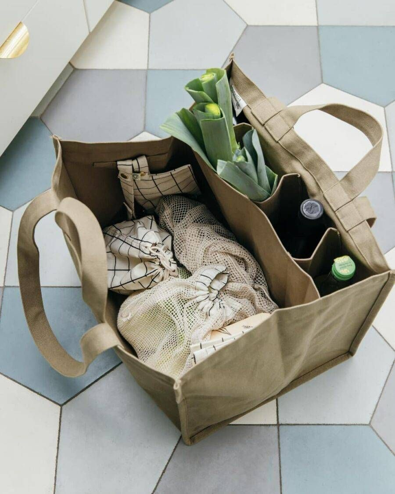
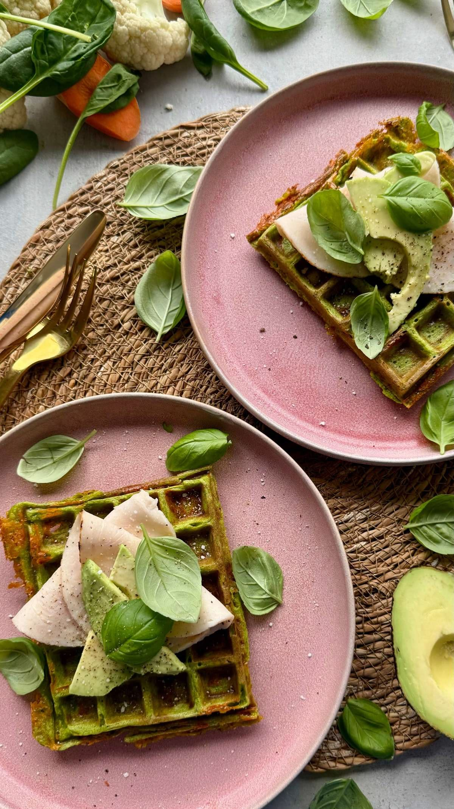

GRØN
DET GRØNNE HJØRNE
Velkommen til GRØN
Hos GRØN – Det grønne hjørne tror vi på, at bæredygtighed ikke behøver at være kompliceret, dyrt eller tidskrævende. Det handler om de små valg, vi træffer hver dag, og hvordan de tilsammen kan gøre en forskel.
26,7 % af madspildet kommer fra husholdningerne – det svarer til ca. 235.000 ton om året.

Skab med omtanke
Genbrug & DIY projekter
Find inspiration til kreative projekter, hvor du kan genbruge gamle ting til noget nyt.



Små skridt i hverdagen
Få tips til en grønnere hverdag
Det behøver ikke være svært at leve lidt grønnere. Find enkle idéer til hjemmet, transport, indkøb og køkkenet, som du kan tage i dit eget tempo.
Se tips
Lækre grøntsagevafler
Grøntsagsvafler er en kreativ og lækker måde at bruge grøntsagsrester på. Vaflerne kan laves med mange forskellige grøntsager og toppes her med kyllingepålæg og cremet avocado. De er perfekte som snack, en let frokost eller et farverigt indslag til brunch.
Ingredienser
- 200 g Grøntsager, fx spinat, gulerødder og blomkål
- 3 stk. Æg
- 1 dl Mælk
- 1 dl Havregryn
- 1 dl Hvedemel
- 0,5 tsk. Salt
- 100 g Revet cheddarost
Kontakt os
GRØN – Det grønne hjørne
service@Grøn.dk
+45 51 78 02 72